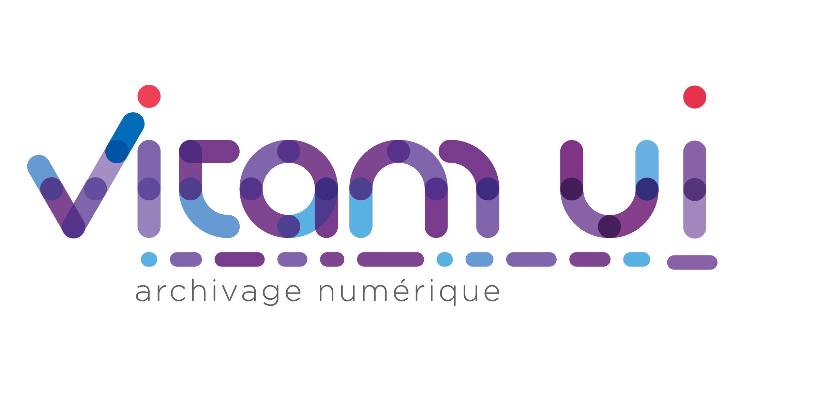

Contents:
1. Introduction
2. Orientations techniques
3. Architecture
4. Implémentation
5. Gestion du système
Vitam-UI
»
Documentation d’architecture de Vitam-UI
Afficher la source de la page
Documentation d’architecture de Vitam-UI
Contents:
1. Introduction
1.1. Structure du document
1.2. Objectifs de la solution
1.3. Contributions et licences
2. Orientations techniques
2.1. Composants open-source
2.2. Architecture micro-service
2.3. Protocole REST
2.4. Sécurité
2.5. Exploitation
2.6. Déploiement
2.7. Continuité de service
3. Architecture
3.1. Applications Web
3.2. Services externes
3.3. Services internes
3.4. Services d’infrastructure
3.5. Service d’archivage VITAM
3.6. Service d’authentification
3.7. Sessions applicatives
3.8. Profils et rôles
3.9. Profils de paramétrage externes
3.10. Journalisation
3.11. Modèle de données
4. Implémentation
4.1. Technologies
4.2. Services
4.3. Intégration système
4.4. Sécurisation
4.5. Certificats et PKI
4.6. Clusterisation
4.7. Détail des services
4.8. Détail des COTS
4.9. Multi instanciation des micro services
5. Gestion du système
5.1. Chaîne de déploiement
5.2. Cloisonnement
5.3. Logs techniques
5.4. Supervision
5.5. Métriques
5.6. PRA